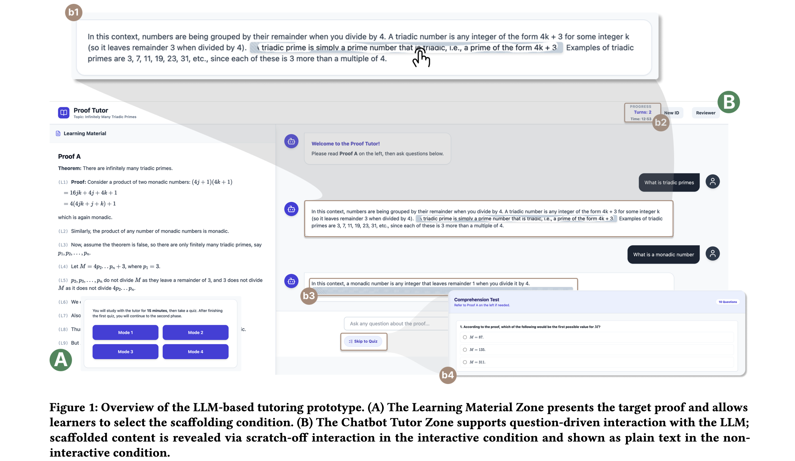
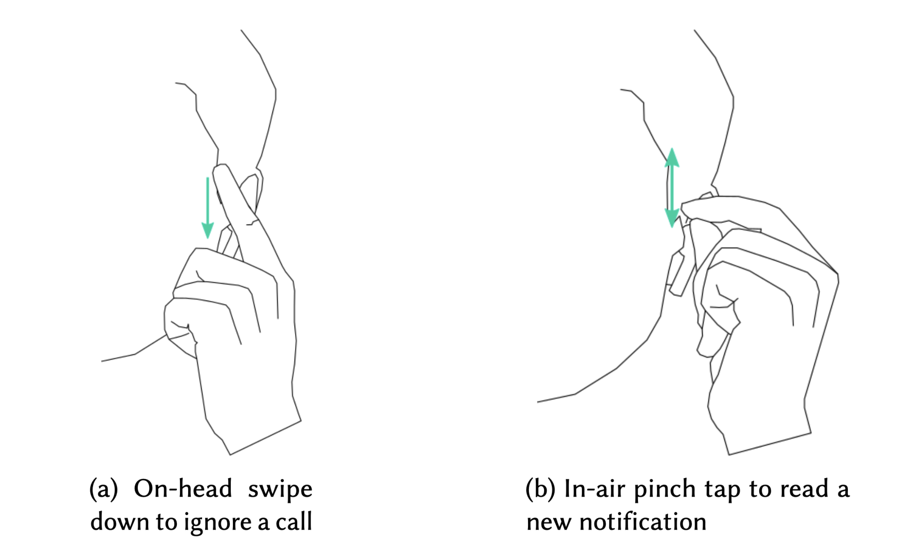
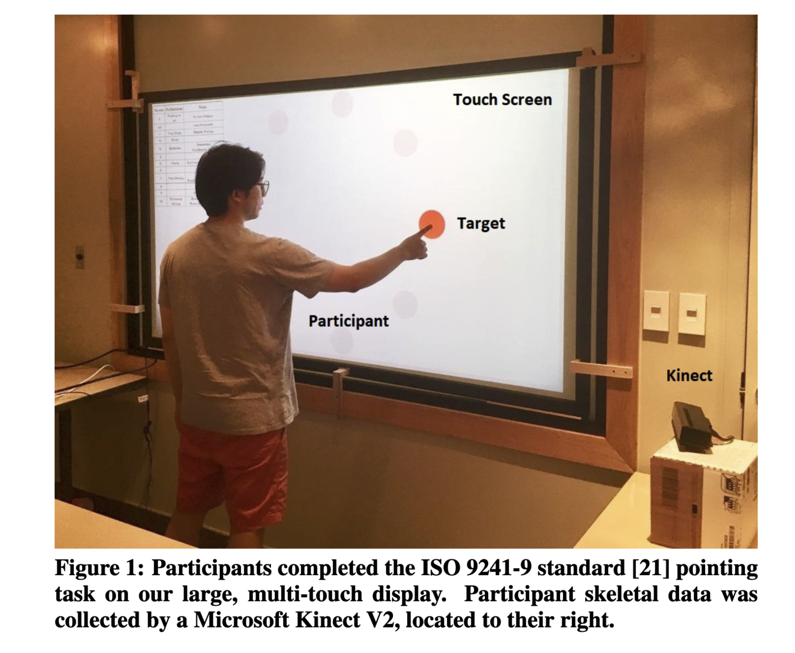
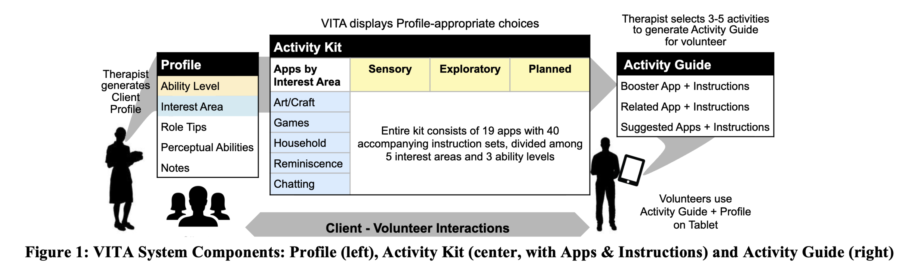
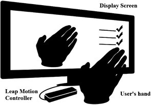
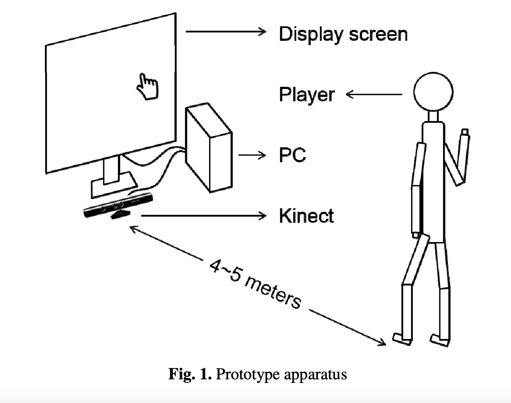
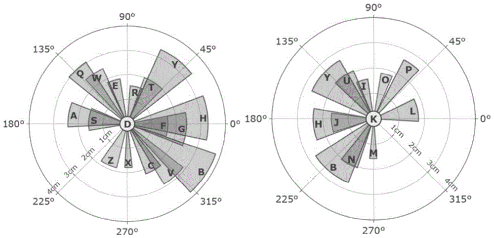
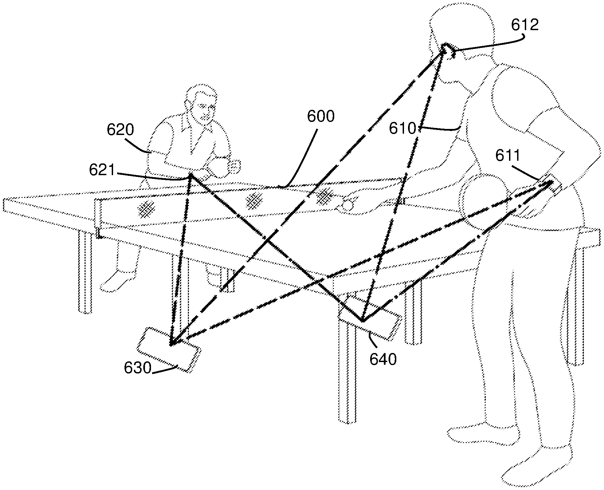
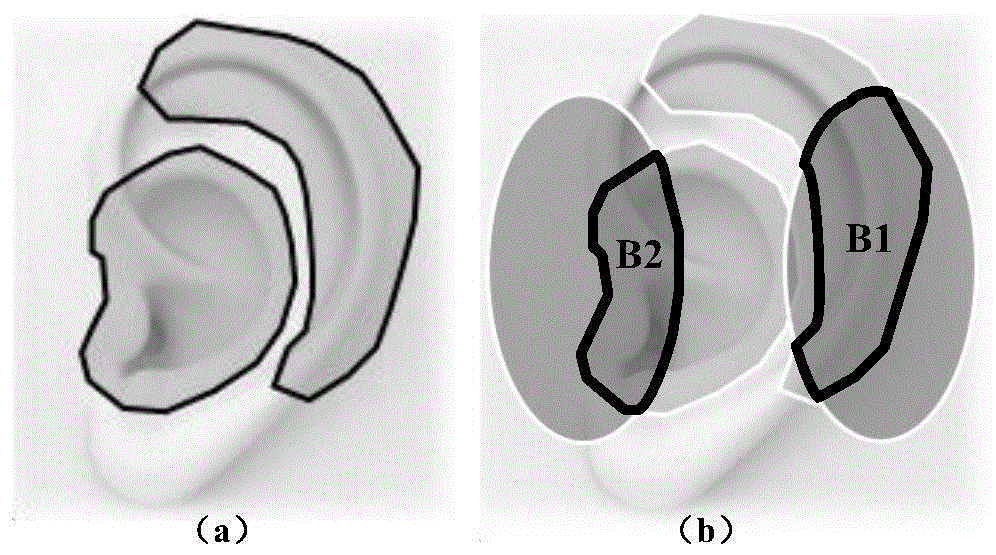
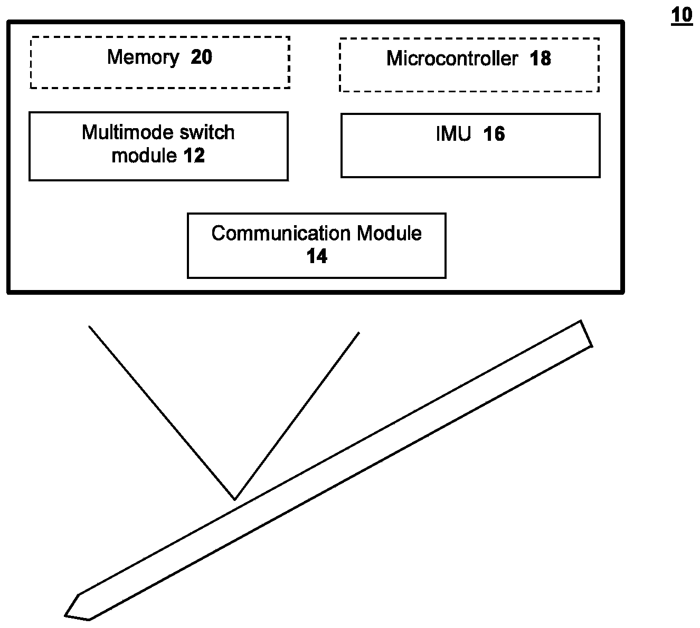

About Me
News
Publications
Research Papers
2026

CHI EAFrom Passive Consumption to Active Interaction: Exploring Interactive LLM Scaffolding to Support Learning Engagement
Proceedings of the Extended Abstracts of the 2026 CHI Conference on Human Factors in Computing Systems, 2026
2025

2022

ISSLeveraging smartwatch and earbuds gesture capture to support wearable interaction
Proceedings of the ACM on Human-Computer Interaction, 2022
2018

PerDisApplying the Cumulative Fatigue Model to Interaction on Large, Multi-Touch Displays
Proceedings of the 7th ACM International Symposium on Pervasive Displays, 2018
2017

CHIVITA: Towards Supporting Volunteer Interactions with Long-Term Care Residents with Dementia
Proceedings of the 2017 CHI Conference on Human Factors in Computing Systems, 2017
2015

HCI InternationalLeap-Motion Based Online Interactive System for Hand Rehabilitation
International Conference on Cross-Cultural Design, 2015
2014

HCI InternationalAn Approach of Indoor Exercise: Kinect-based Video Game for Elderly People
International Conference on Cross-Cultural Design, 2014
Patents
2021

Patent CNA Bi-manual Separated Text Entry Method Based on Stroke Direction and Distance
CN112218134A, 2021

Patent USBuild a Flexible Local Tracking System using one or multiple mobile devices
US20220395724A1, 2021

Patent CN
Patent WODevices and methods for remote control and annotation associated with an electronic device
WO2023097573A1, 2021
2020
Experience
Education
PhD Computer Science
University of British Columbia
August 2022 – Present
- Specialization: Human-Computer Interaction and Human-AI Interaction.
- Supervisor: Joanna McGrenere.
Master of Science in Human-Computer Interaction
University of Waterloo
April 2017 – August 2019
- GPA: 3.70/4.0
- Thesis: Modeling Cumulative Arm Fatigue on Large Multi-touch Displays.
- Advisors: Prof. James Wallace, Prof. Daniel Vogel.
- Relevant Courses: Computer Vision in Human-Computer Interaction, Machine Learning, Deep Learning.
Bachelor of Science in Industrial Engineering
Tsinghua University
August 2011 – July 2015
- GPA: 3.65/4.0
- Relevant Courses: Programming, Data Structures, Algorithm Analysis, Databases, User-Centered Design.
Work Experience
Research Intern
Microsoft Research Aisa
Present – Present
HCI Research Engineer
HUAWEI Technologies Canada
April 2019 – August 2022
- Designed and evaluated a bi-manual text entry method with 'eyes-free' situation for VR display.
- Conducted experiment about free-hand gesture control with large distant display.
- Investigated user behavior for pointing with IMU and UWB-driven devices in a real Smart Home environment.
Full Stack Developer
Ecopia Tech
April 2018 – August 2018
- Developed a web-based interface using REACT (JavaScript library) for stage-able project management.
- Implemented a distributive system with AWS to pipeline programs, decreasing human effort by 92%.
Interactive Designer Intern
AUGMN Incorporation
February 2015 – June 2015
- Designed and proposed the swipe gesture for "Scanning" and "Read More" operations for TOWN (a location-based social APP).
- Self-taught iOS development skills to implement the gesture interaction module within 2 weeks.
Research Intern
Georgia Institute of Technology, Ubiquitous Computing Group
May 2014 – September 2014
- Designed and developed a motion-based Tetris game with C#. Video
- Managed an observational study with 30 students with autism and interviews with 7 teachers and caregivers to test the impact on children's engagement, social behaviour and motor skills.
Awards & Honors
Four Year Doctoral Fellowship (4YF)
University of British Columbia
December 2024
- Awarded for academic excellence (doctoral student)
Four Year Doctoral Fellowship (4YF)
University of British Columbia
December 2023
- Awarded for academic excellence (doctoral student)
Teaching
CPSC 344 - Introduction to Human Computer Interaction Methods
Teaching Assistant, UBC
2022 Fall
CPSC 344 - Introduction to Human Computer Interaction Methods
Teaching Assistant, UBC
2023 Spring
CPSC 344 - Introduction to Human Computer Interaction Methods
Teaching Assistant, UBC
2023 Fall
CPSC 444 - Advanced Methods for Human Computer Interaction
Teaching Assistant, UBC
2025 Spring
Graduate/Post-doc Students Teaching in Higher Education Conference, Certificate
Trainee, ITeach in Higher Education
2025 Summer
CPSC 436N - Natural Language Processing
Teaching Assistant, UBC
2025 Fall
UBC Computer Science Teaching Development Program (Year 2)
Trainee, UBC
2025 Fall